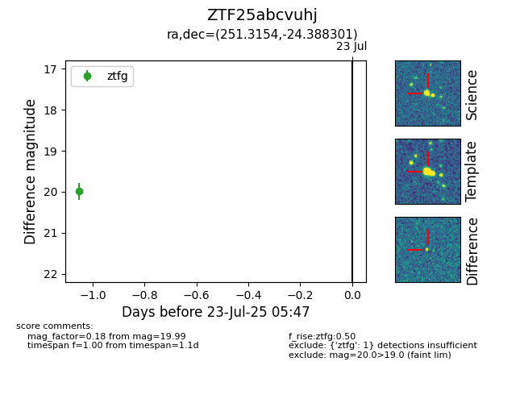

Target ZTF25abcvuhj at 2025-07-23 12:37, see:
FINK: fink-portal.org/ZTF25abcvuhj
Lasair: lasair-ztf.lsst.ac.uk/objects/ZTF25abcvuhj
ALeRCE: alerce.online/object/ZTF25abcvuhj
alt names
ZTF25abcvuhj (ztf,fink)
coordinates:
equatorial (ra, dec) = (251.3154,-24.38830)
galactic (l, b) = (355.9388,+13.63706)
photometry
last ztfg=19.99
1 ztfg detections
